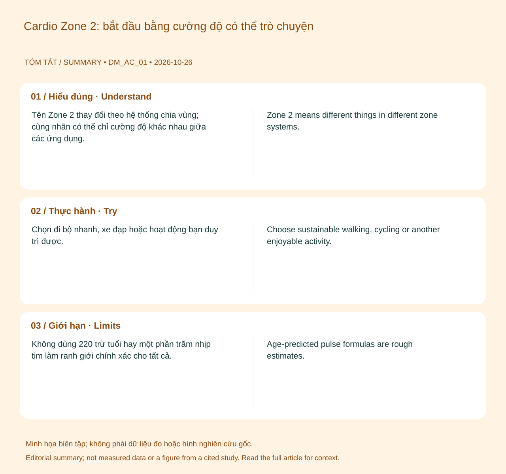

Nguồn tham khảo chính: CDC — Measuring Physical Activity Intensity ↗•Màn hình App: Activity Screen•Chỉ số: Zone 2 cardio: a practical starting point (educational topic; not a measured biomarker)
💡Điểm Cốt Lõi & Hành Động Thực Tế
Chọn đi bộ nhanh, xe đạp hoặc hoạt động bạn duy trì được. Bắt đầu ở thời lượng phù hợp, tăng dần khi thấy dễ chịu; kết hợp tập sức mạnh trong tuần và chừa thời gian phục hồi.
Hiểu đúng
Tên Zone 2 thay đổi theo hệ thống chia vùng; cùng nhãn có thể chỉ cường độ khác nhau giữa các ứng dụng. Talk test là cách đơn giản để ước lượng vận động vừa: còn nói được nhưng khó hát. Nó không thay thế đo ngưỡng sinh lý trong phòng lab. 12

📊 Sơ đồ tóm tắt do biên tập tạo. Không phải số liệu đo, hình giải phẫu hay hình lấy từ nghiên cứu trích dẫn.(Mở sơ đồ tóm tắt biên tập ↗)
Bạn có thể làm gì?
Chọn đi bộ nhanh, xe đạp hoặc hoạt động bạn duy trì được. Bắt đầu ở thời lượng phù hợp, tăng dần khi thấy dễ chịu; kết hợp tập sức mạnh trong tuần và chừa thời gian phục hồi.
Giới hạn cần biết
Không dùng 220 trừ tuổi hay một phần trăm nhịp tim làm ranh giới chính xác cho tất cả. Zone 2 không phải vùng duy nhất có lợi hay bảo đảm đốt mỡ nhiều nhất về dài hạn.
Khi nào cần tư vấn?
Dừng tập nếu đau ngực, choáng hoặc khó thở khác thường; bệnh nền và thuốc cần được tính vào kế hoạch.
WHO — Physical activity — Public health guideline summary. Hỗ trợ: Khuyến nghị vận động theo nhóm đối tượng.
Cập nhật nội dung và nguồn: 2026-10-26. Nội dung giáo dục; chưa có xác nhận duyệt bởi bác sĩ.
📚
Nguồn tham khảo và giới hạn bằng chứng
Nguồn chính: CDC — Measuring Physical Activity Intensity. Các nguồn bổ sung và phạm vi hỗ trợ được liệt kê trong bài. Cập nhật 26/10/2026; chưa có xác nhận duyệt bởi bác sĩ.
Primary reference: CDC — Measuring Physical Activity Intensity ↗•Mapped Screen: Activity Screen•Biometric: Zone 2 cardio: a practical starting point (educational topic; not a measured biomarker)
💡Key Actionable Takeaway
Choose sustainable walking, cycling or another enjoyable activity. Start with a manageable duration, build gradually and include strength work and recovery during the week.
Understanding the topic
Zone 2 means different things in different zone systems. The talk test offers a simple estimate of moderate effort: conversation is possible but singing is difficult. It is not a laboratory threshold measurement. 12
📊 Original editorial summary. Not measured data, an anatomical diagram or a figure reproduced from a cited study.(Editorial summary artwork ↗)
What you can do
Choose sustainable walking, cycling or another enjoyable activity. Start with a manageable duration, build gradually and include strength work and recovery during the week.
What the evidence cannot tell you
Age-predicted pulse formulas are rough estimates. Zone 2 is neither the only beneficial intensity nor a guarantee of greater long-term fat loss.
When to seek advice
Stop for chest pain, faintness or unusual breathlessness. Account for medical conditions and medicines in your plan.
WHO — Physical activity — Public health guideline summary. Supports: Activity recommendations by population.
Content and sources updated: 2026-10-26. Educational content; clinical sign-off has not been recorded.
📚
References and evidence limits
Primary reference: CDC — Measuring Physical Activity Intensity. Additional sources and their scope appear in the article. Updated 26 October 2026; clinical sign-off has not been recorded.